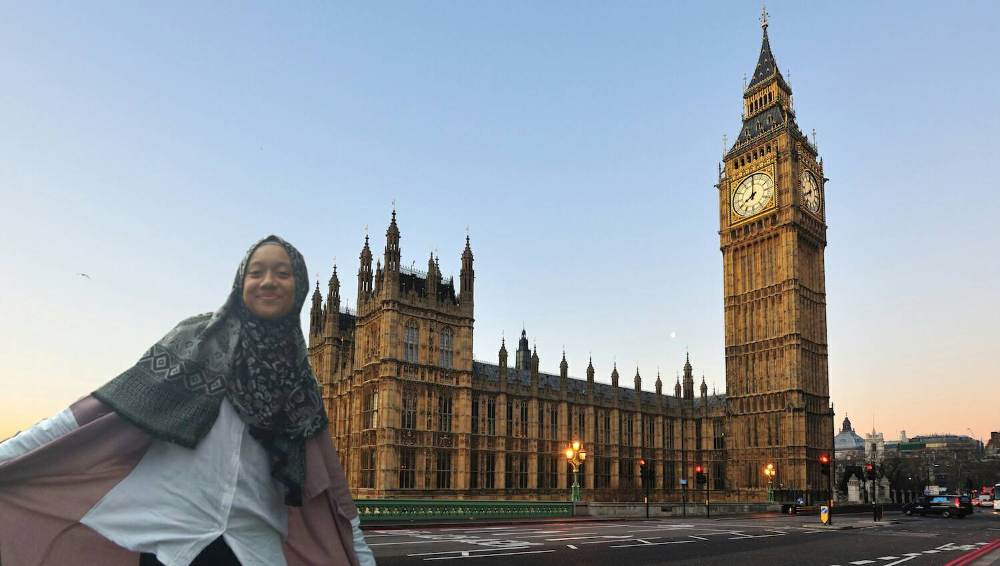

Hello guys! Welcome to ma page!
My Profile
Kenalin nih gaes, namaku Almira Rafelia. Sebut saja Rafel. Ngga juga sih, kalian bisa panggil aku Almira atau Mira atau Al ajah, gapapa jangan dipersulit, berat, kamu gak akan kuat. Receh kaka. Well, aku mau berbagi sama temen-temen tentang profil seorang Almira Rafelia beserta dengan hobi-hobinya!!
Kepo? let's scroll down!
Aku lahir di kota Kebumen, Jawa Tengah pada tanggal 7 Maret 2001 jam 11 pagi (for your information gaes HEHE). Anak pertama dari pasangan nyonya Erna Rustiana dengan tuan Achmad Mardjuki. Sekarang aku punya seorang adik laki-laki bernama Achmad Nizam Rashid(cowok sok cool yang menyebalkan) yang duduk di bangku kelas 2 SMP di SMPN 4 Bogor, SMP-ku juga dulu. Sekarang, aku bersekolah di SMK-SMAK Bogor (SMAKBo). Sebenernya ya gaes, aku sukanya Biologi tapi entah mengapa ngebet banget pengen masuk SMAKBo waktu SMP dulu.
About ma hobbies?

Hobi? tentu saja aku punya! (ini sok-sok kaya penulis KKPK yang masih SD gitu yha). Aku punya banyak hobi. Yang paling sering aku lakukan adalah menggambar (mewarnai sekaligus lukis kayanya hehe).
Kenapa tuh harus menggambar?!
Karena menurutku, menggambar dapat menjadi media untuk menuangkan segala imajinasi dan emosi. Biasanya setelah menggambar, perasaanmu akan menjadi lebih baik.
Kenapa harus mewarnai?!
Karena mewarnai bisa membuat kedua matamu rileks melihat warna-warna dan mewarnai harimu yeeyy terutama warna biru yang memberi kesan sejuk dan rileks. Oleh sebab itu, aku suka warna biru!

Daaan satu lagi hobiku adalah membaca buku! Tapi hanya novel yang aku sukai. Buku pelajaran, majalah, bahkan komik sungguh tak aku sukai, ironi memang. Novel favoritku adalah novel karangan Tere Liye
Kenapa harus novel?!
Karena menurutku, novel dapat menambah wawasan dan mengembangkan kemampuan berimajinasi dan membayangkan bidang (sok tau banget ya hahaha).